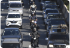

Notícias
- 1. Semáforos inteligentes podem...
- 2.  PL determina o uso de bafômetros...
- 3. Maioria dos motoristas diz que motos...

Severidade: ★★★★
Data: 11/11/2024
Descrição: Um carro perdeu o controle...

Severidade: ★★★☆☆
Data: 21/11/2024
Descrição: Um dos carros perdeu o controle...

Horário de pico: 12h-13h
Status: Mediano
Sinalização: Buraco reportado